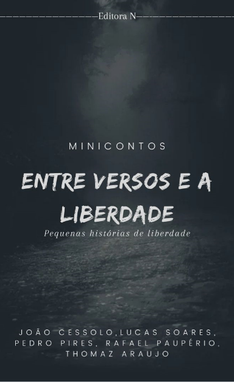
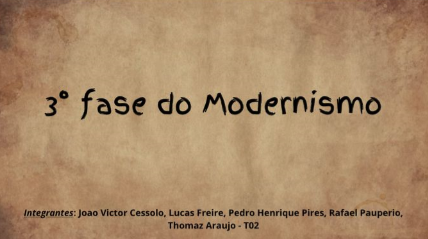

Nessa atividade criamos uma propaganda autoral, tivemos que estudar o passo a passo e como funciona a estrutura de uma propaganda
Ja nessa segunda atividade puxou um lado mais criativo meu, o objetivo era criar um livro de microcontos autoral sobre a liberdade.

Por ultimo essa atividade era uma pesquisa que eu achei interessante sobre a terceira fase do modernismo
